Four continuous sessions analysed separately. Five-second epochs, DPSS NW=1/K=1. No game/condition labels; 17/19 Hz are inherited analysis targets. The third session is raw and unfiltered; the other three contain board-filtered signals. Rolling CCA is an offline reconstruction with explicit boundary fits. All samples retained.
| session | label | source | samples | observed_seconds | logged_cca_updates |
|---|---|---|---|---|---|
| eeg_20261102_171301 | 250sps 10Hz NF open pins | board-filtered | 27433 | 109.732 | 1097 |
| eeg_20261102_171453 | 250sps 10Hz NF open pins | board-filtered | 103618 | 414.472 | 4145 |
| eeg_20261102_172232 | 250sps raw open pins | raw, unfiltered | 131567 | 526.268 | 0 |
| eeg_20261102_174147 | 250sps 5Hz NF open pins | board-filtered | 133341 | 533.364 | 2667 |
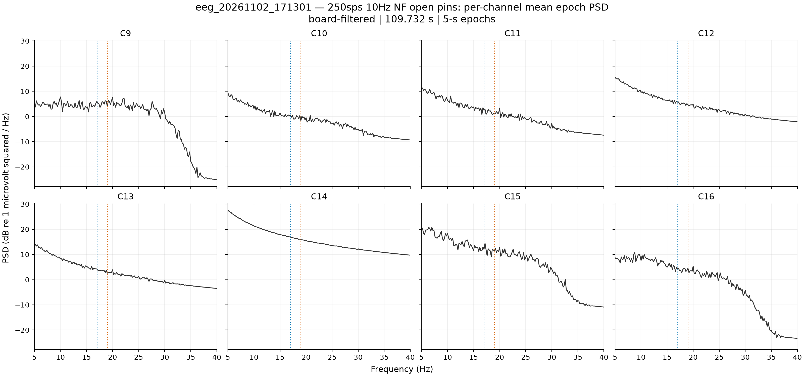
board-filtered. All samples retained. 21 complete + 1 partial epochs. Mean epoch PSD in linear power, each channel separately. DPSS NW=1/K=1; 0.2 Hz FFT grid. Dotted blue/orange: 17/19 Hz analysis targets.
SVG| Channel mean | Whole-session CCA | Rolling CCA |
|---|---|---|
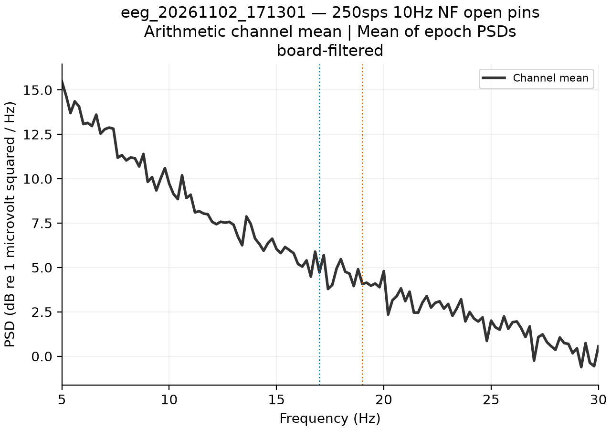 board-filtered; channels: C9, C10, C11, C12, C13, C14, C15, C16. Mean of selected channels before epoching. PSD per epoch, then equal epoch mean in linear power. 21 complete + 1 partial 5-s epochs; 27433 samples, all retained. DPSS NW=1/K=1; 0.2 Hz FFT grid. 17/19 Hz are inherited targets, not verified stimuli. SVG | 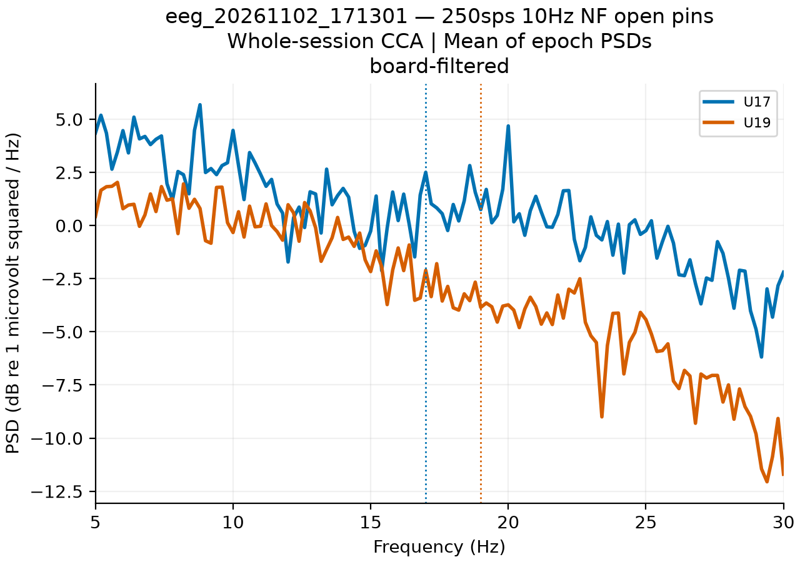 board-filtered; channels: C9, C10, C11, C12, C13, C14, C15, C16. Independent target weights fitted once using the whole session. PSD per epoch, then equal epoch mean in linear power. 21 complete + 1 partial 5-s epochs; 27433 samples, all retained. DPSS NW=1/K=1; 0.2 Hz FFT grid. 17/19 Hz are inherited targets, not verified stimuli. SVG | 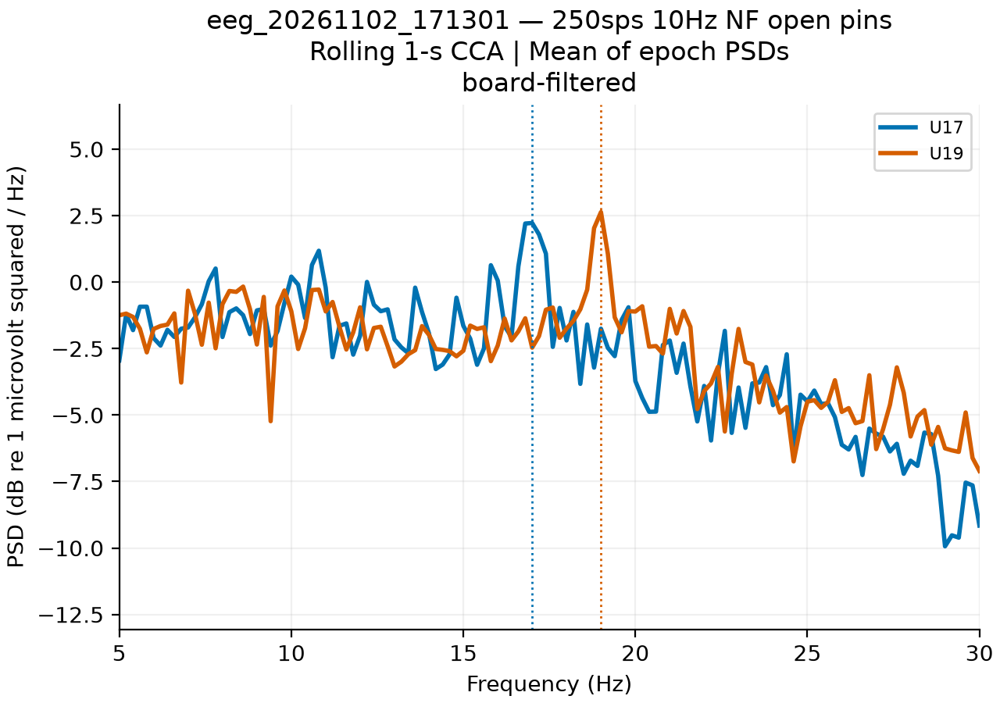 board-filtered; channels: C9, C10, C11, C12, C13, C14, C15, C16. Latest 1-s windows; logged CCA endpoints + offline boundary endpoints. First window back-projected; offline analysis. PSD per epoch, then equal epoch mean in linear power. 21 complete + 1 partial 5-s epochs; 27433 samples, all retained. DPSS NW=1/K=1; 0.2 Hz FFT grid. 17/19 Hz are inherited targets, not verified stimuli. SVG |
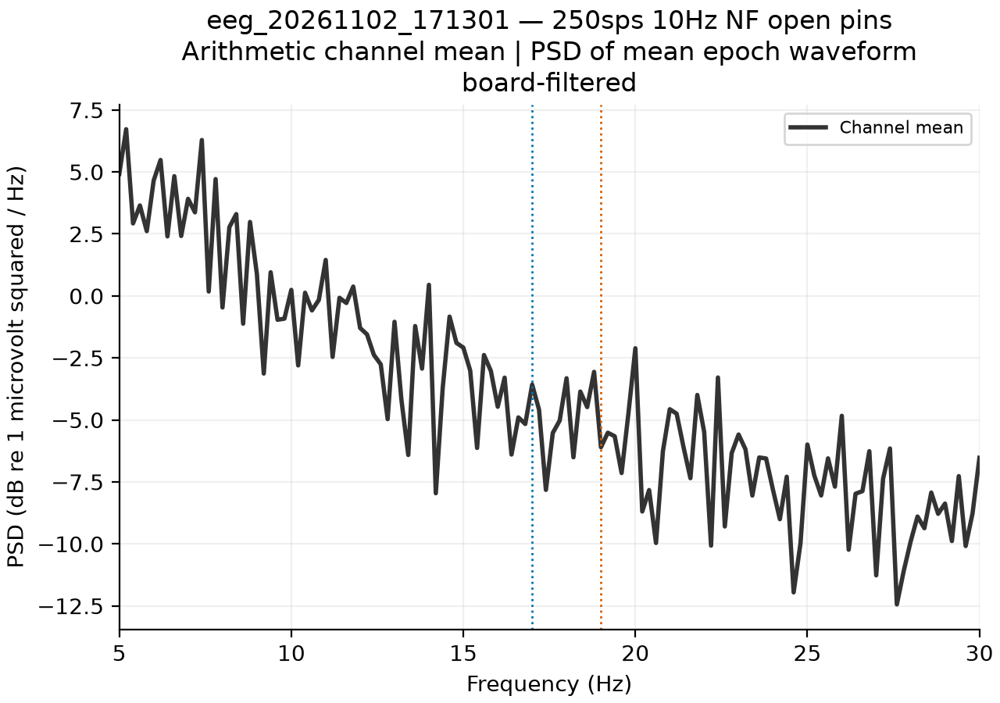 board-filtered; channels: C9, C10, C11, C12, C13, C14, C15, C16. Mean of selected channels before epoching. NaN-aware mean epoch waveform, then PSD. No event alignment. 21 complete + 1 partial 5-s epochs; 27433 samples, all retained. DPSS NW=1/K=1; 0.2 Hz FFT grid. 17/19 Hz are inherited targets, not verified stimuli. SVG | 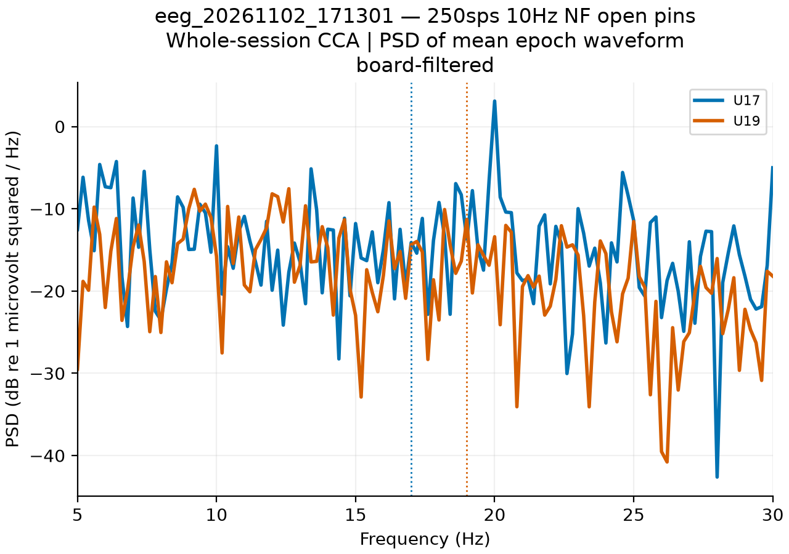 board-filtered; channels: C9, C10, C11, C12, C13, C14, C15, C16. Independent target weights fitted once using the whole session. NaN-aware mean epoch waveform, then PSD. No event alignment. 21 complete + 1 partial 5-s epochs; 27433 samples, all retained. DPSS NW=1/K=1; 0.2 Hz FFT grid. 17/19 Hz are inherited targets, not verified stimuli. SVG | 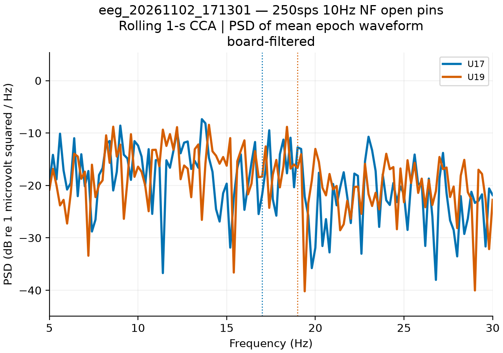 board-filtered; channels: C9, C10, C11, C12, C13, C14, C15, C16. Latest 1-s windows; logged CCA endpoints + offline boundary endpoints. First window back-projected; offline analysis. NaN-aware mean epoch waveform, then PSD. No event alignment. 21 complete + 1 partial 5-s epochs; 27433 samples, all retained. DPSS NW=1/K=1; 0.2 Hz FFT grid. 17/19 Hz are inherited targets, not verified stimuli. SVG |
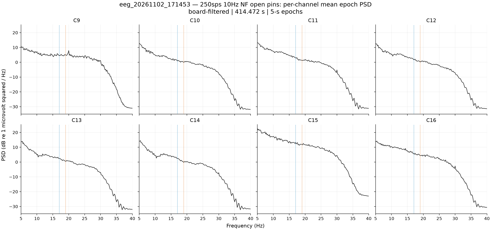
board-filtered. All samples retained. 82 complete + 1 partial epochs. Mean epoch PSD in linear power, each channel separately. DPSS NW=1/K=1; 0.2 Hz FFT grid. Dotted blue/orange: 17/19 Hz analysis targets.
SVG| Channel mean | Whole-session CCA | Rolling CCA |
|---|---|---|
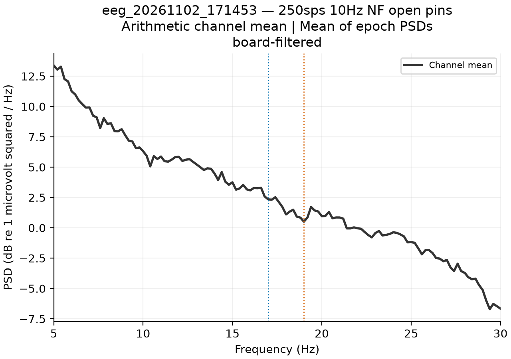 board-filtered; channels: C9, C10, C11, C12, C13, C14, C15, C16. Mean of selected channels before epoching. PSD per epoch, then equal epoch mean in linear power. 82 complete + 1 partial 5-s epochs; 103618 samples, all retained. DPSS NW=1/K=1; 0.2 Hz FFT grid. 17/19 Hz are inherited targets, not verified stimuli. SVG | 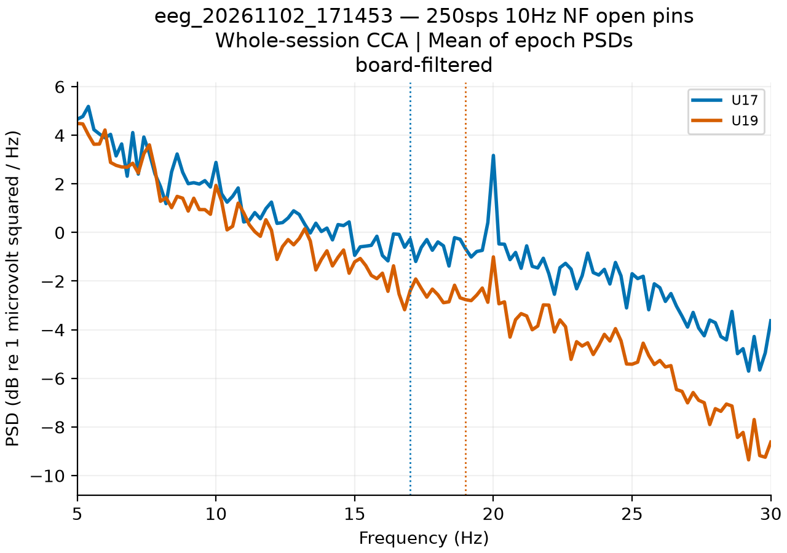 board-filtered; channels: C9, C10, C11, C12, C13, C14, C15, C16. Independent target weights fitted once using the whole session. PSD per epoch, then equal epoch mean in linear power. 82 complete + 1 partial 5-s epochs; 103618 samples, all retained. DPSS NW=1/K=1; 0.2 Hz FFT grid. 17/19 Hz are inherited targets, not verified stimuli. SVG | 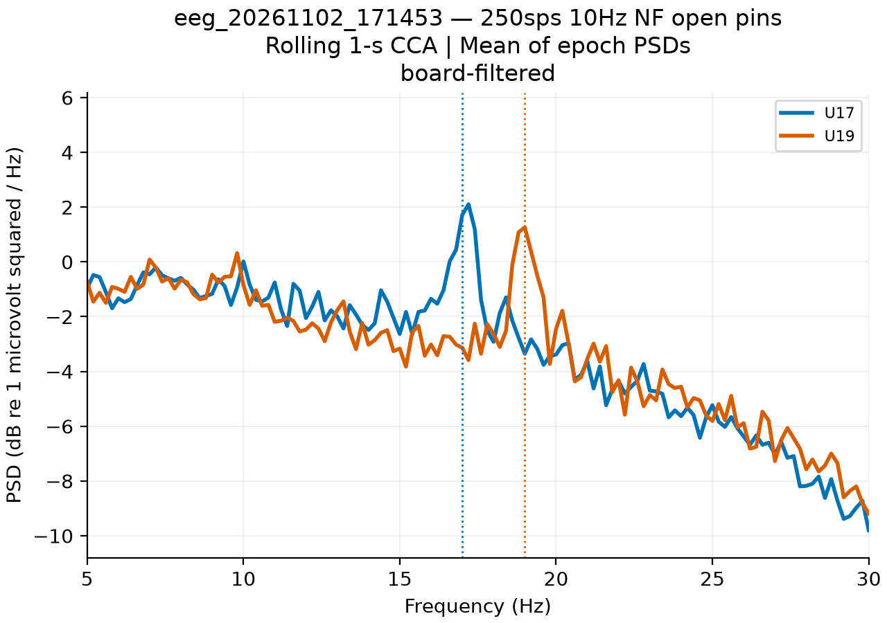 board-filtered; channels: C9, C10, C11, C12, C13, C14, C15, C16. Latest 1-s windows; logged CCA endpoints + offline boundary endpoints. First window back-projected; offline analysis. PSD per epoch, then equal epoch mean in linear power. 82 complete + 1 partial 5-s epochs; 103618 samples, all retained. DPSS NW=1/K=1; 0.2 Hz FFT grid. 17/19 Hz are inherited targets, not verified stimuli. SVG |
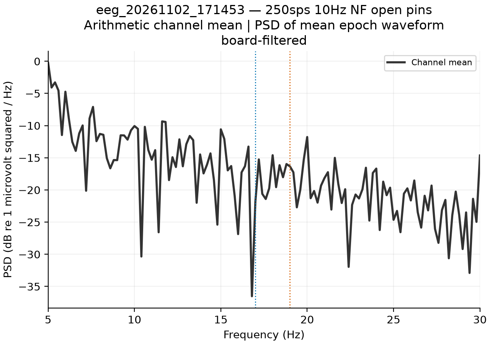 board-filtered; channels: C9, C10, C11, C12, C13, C14, C15, C16. Mean of selected channels before epoching. NaN-aware mean epoch waveform, then PSD. No event alignment. 82 complete + 1 partial 5-s epochs; 103618 samples, all retained. DPSS NW=1/K=1; 0.2 Hz FFT grid. 17/19 Hz are inherited targets, not verified stimuli. SVG | 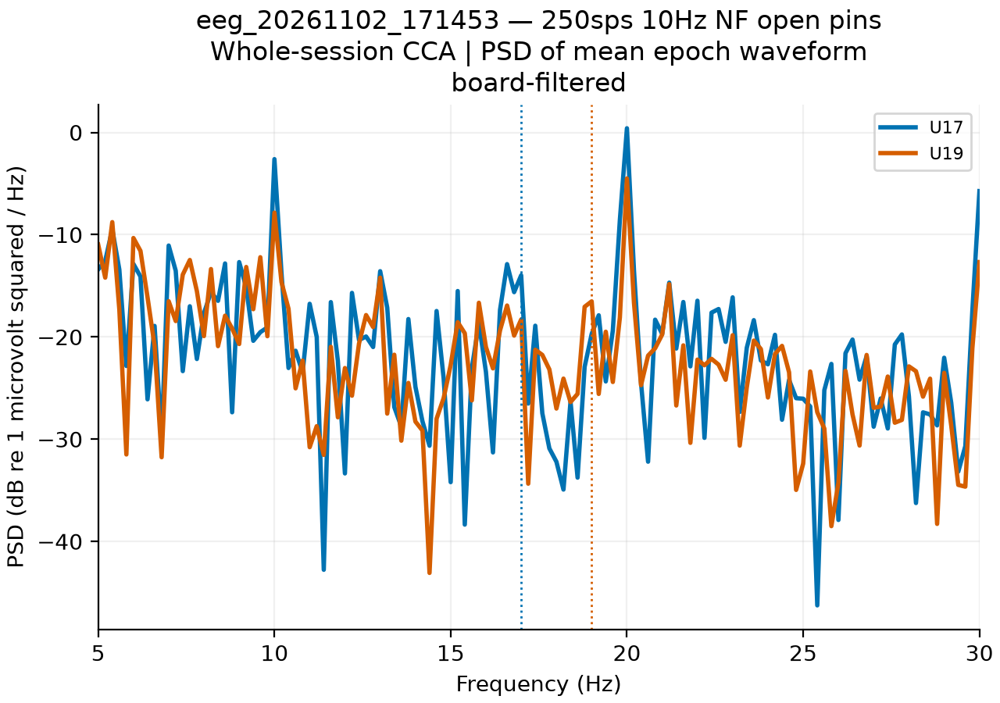 board-filtered; channels: C9, C10, C11, C12, C13, C14, C15, C16. Independent target weights fitted once using the whole session. NaN-aware mean epoch waveform, then PSD. No event alignment. 82 complete + 1 partial 5-s epochs; 103618 samples, all retained. DPSS NW=1/K=1; 0.2 Hz FFT grid. 17/19 Hz are inherited targets, not verified stimuli. SVG | 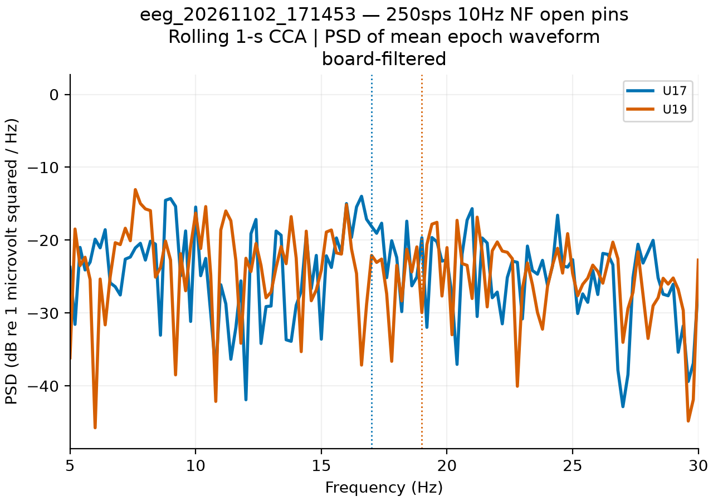 board-filtered; channels: C9, C10, C11, C12, C13, C14, C15, C16. Latest 1-s windows; logged CCA endpoints + offline boundary endpoints. First window back-projected; offline analysis. NaN-aware mean epoch waveform, then PSD. No event alignment. 82 complete + 1 partial 5-s epochs; 103618 samples, all retained. DPSS NW=1/K=1; 0.2 Hz FFT grid. 17/19 Hz are inherited targets, not verified stimuli. SVG |
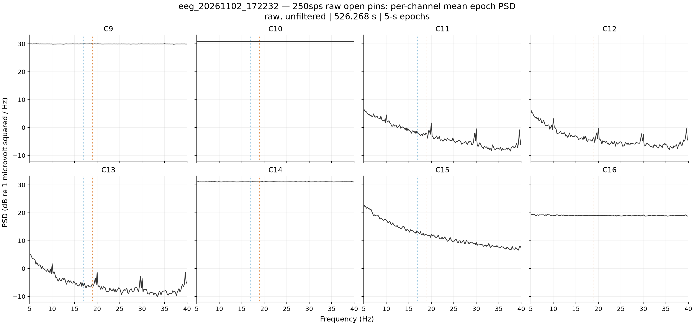
raw, unfiltered. All samples retained. 105 complete + 1 partial epochs. Mean epoch PSD in linear power, each channel separately. DPSS NW=1/K=1; 0.2 Hz FFT grid. Dotted blue/orange: 17/19 Hz analysis targets.
SVG| Channel mean | Whole-session CCA | Rolling CCA |
|---|---|---|
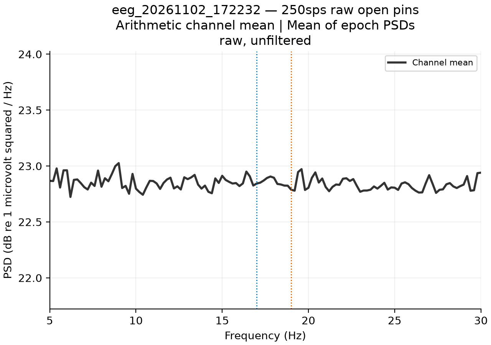 raw, unfiltered; channels: C9, C10, C11, C12, C13, C14, C15, C16. Mean of selected channels before epoching. PSD per epoch, then equal epoch mean in linear power. 105 complete + 1 partial 5-s epochs; 131567 samples, all retained. DPSS NW=1/K=1; 0.2 Hz FFT grid. 17/19 Hz are inherited targets, not verified stimuli. SVG | 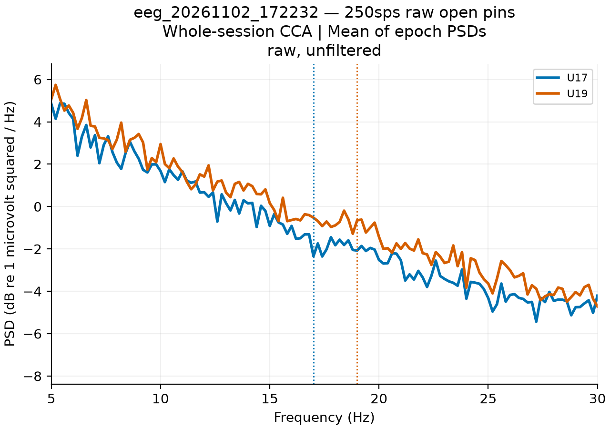 raw, unfiltered; channels: C9, C10, C11, C12, C13, C14, C15, C16. Independent target weights fitted once using the whole session. PSD per epoch, then equal epoch mean in linear power. 105 complete + 1 partial 5-s epochs; 131567 samples, all retained. DPSS NW=1/K=1; 0.2 Hz FFT grid. 17/19 Hz are inherited targets, not verified stimuli. SVG | 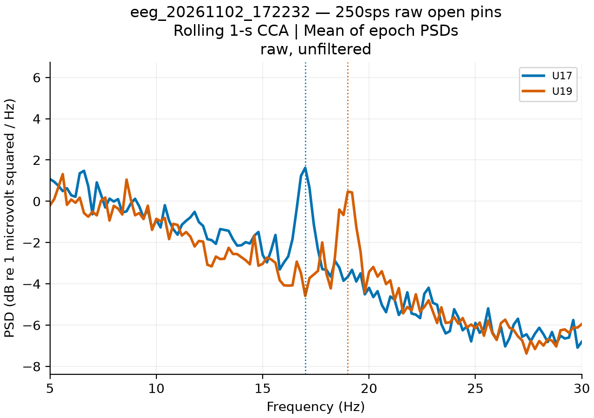 raw, unfiltered; channels: C9, C10, C11, C12, C13, C14, C15, C16. Latest 1-s windows; offline 100 ms schedule (no logged CCA stream). First window back-projected; offline analysis. PSD per epoch, then equal epoch mean in linear power. 105 complete + 1 partial 5-s epochs; 131567 samples, all retained. DPSS NW=1/K=1; 0.2 Hz FFT grid. 17/19 Hz are inherited targets, not verified stimuli. SVG |
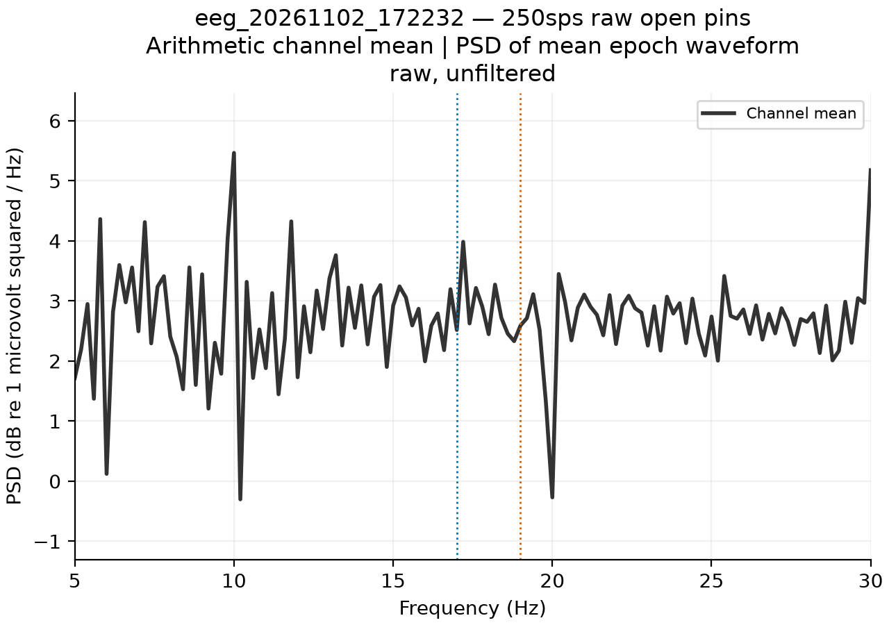 raw, unfiltered; channels: C9, C10, C11, C12, C13, C14, C15, C16. Mean of selected channels before epoching. NaN-aware mean epoch waveform, then PSD. No event alignment. 105 complete + 1 partial 5-s epochs; 131567 samples, all retained. DPSS NW=1/K=1; 0.2 Hz FFT grid. 17/19 Hz are inherited targets, not verified stimuli. SVG | 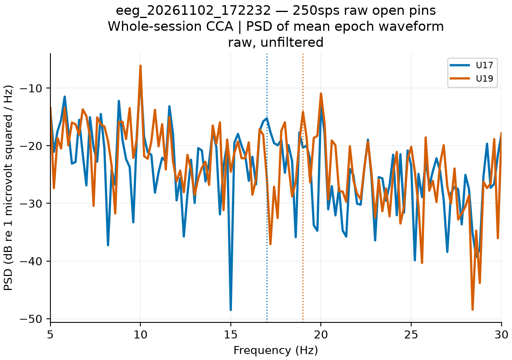 raw, unfiltered; channels: C9, C10, C11, C12, C13, C14, C15, C16. Independent target weights fitted once using the whole session. NaN-aware mean epoch waveform, then PSD. No event alignment. 105 complete + 1 partial 5-s epochs; 131567 samples, all retained. DPSS NW=1/K=1; 0.2 Hz FFT grid. 17/19 Hz are inherited targets, not verified stimuli. SVG | 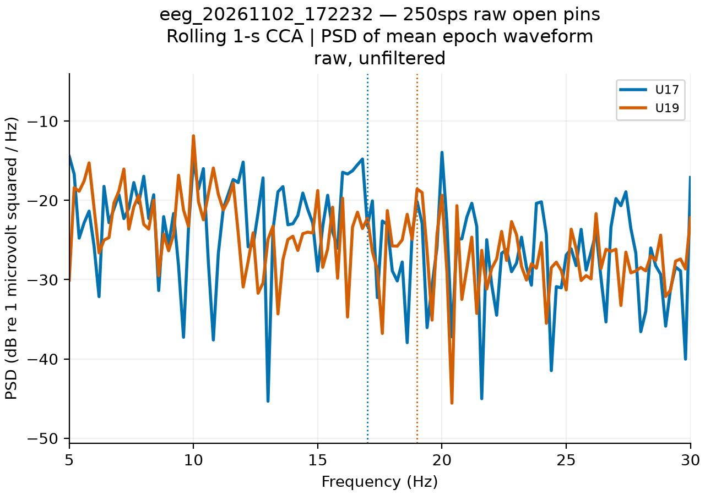 raw, unfiltered; channels: C9, C10, C11, C12, C13, C14, C15, C16. Latest 1-s windows; offline 100 ms schedule (no logged CCA stream). First window back-projected; offline analysis. NaN-aware mean epoch waveform, then PSD. No event alignment. 105 complete + 1 partial 5-s epochs; 131567 samples, all retained. DPSS NW=1/K=1; 0.2 Hz FFT grid. 17/19 Hz are inherited targets, not verified stimuli. SVG |
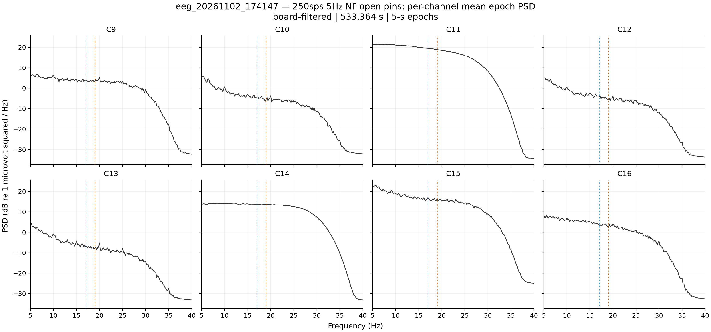
board-filtered. All samples retained. 106 complete + 1 partial epochs. Mean epoch PSD in linear power, each channel separately. DPSS NW=1/K=1; 0.2 Hz FFT grid. Dotted blue/orange: 17/19 Hz analysis targets.
SVG| Channel mean | Whole-session CCA | Rolling CCA |
|---|---|---|
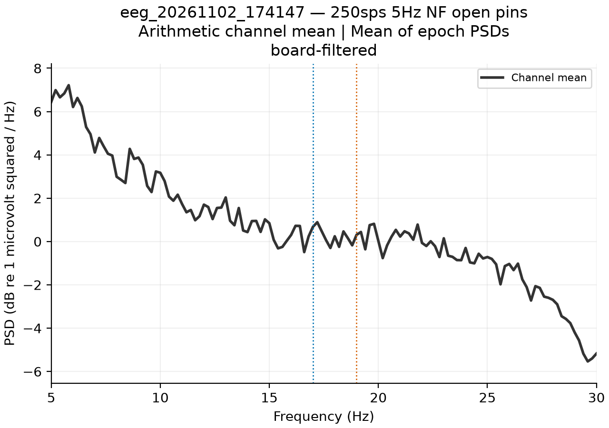 board-filtered; channels: C9, C10, C11, C12, C13, C14, C15, C16. Mean of selected channels before epoching. PSD per epoch, then equal epoch mean in linear power. 106 complete + 1 partial 5-s epochs; 133341 samples, all retained. DPSS NW=1/K=1; 0.2 Hz FFT grid. 17/19 Hz are inherited targets, not verified stimuli. SVG | 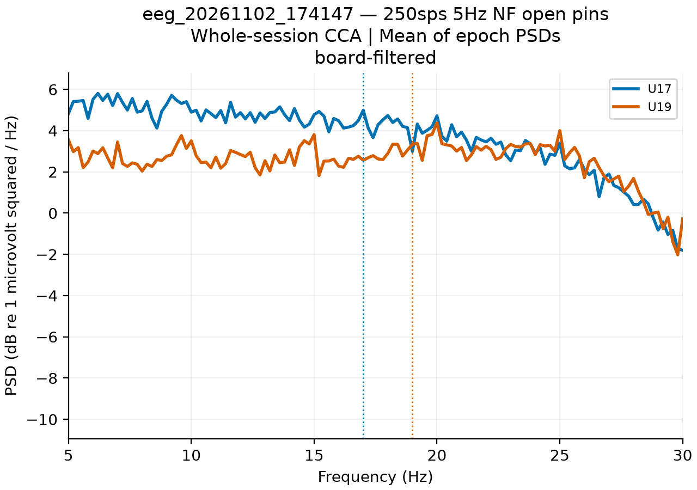 board-filtered; channels: C9, C10, C11, C12, C13, C14, C15, C16. Independent target weights fitted once using the whole session. PSD per epoch, then equal epoch mean in linear power. 106 complete + 1 partial 5-s epochs; 133341 samples, all retained. DPSS NW=1/K=1; 0.2 Hz FFT grid. 17/19 Hz are inherited targets, not verified stimuli. SVG | 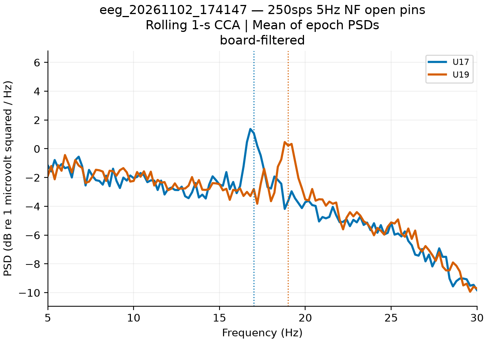 board-filtered; channels: C9, C10, C11, C12, C13, C14, C15, C16. Latest 1-s windows; logged CCA endpoints + offline boundary endpoints. First window back-projected; offline analysis. PSD per epoch, then equal epoch mean in linear power. 106 complete + 1 partial 5-s epochs; 133341 samples, all retained. DPSS NW=1/K=1; 0.2 Hz FFT grid. 17/19 Hz are inherited targets, not verified stimuli. SVG |
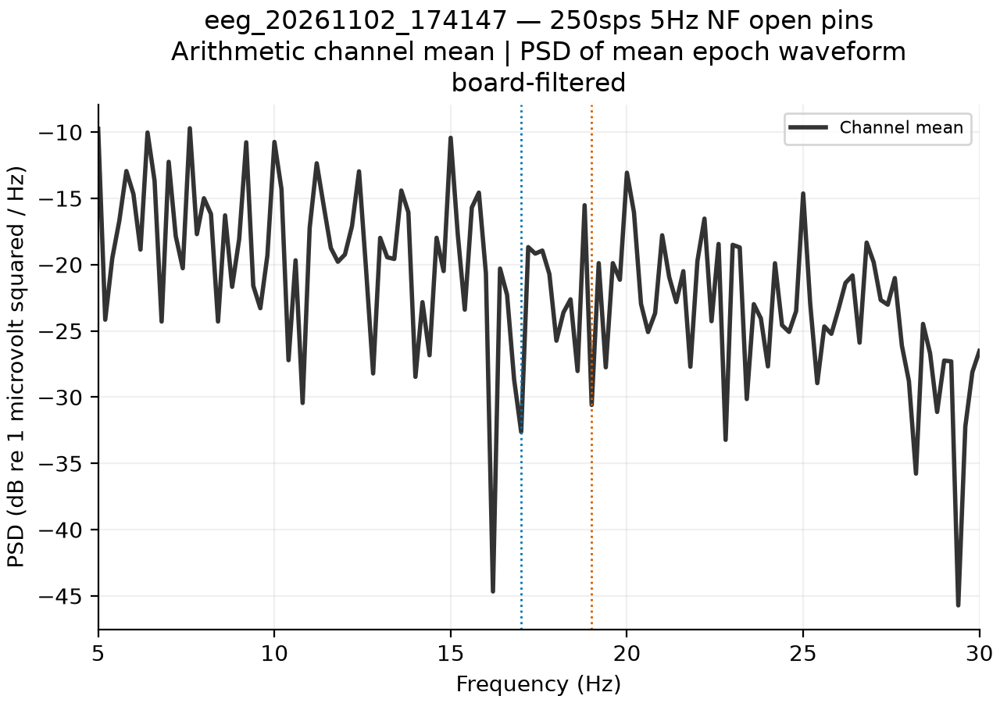 board-filtered; channels: C9, C10, C11, C12, C13, C14, C15, C16. Mean of selected channels before epoching. NaN-aware mean epoch waveform, then PSD. No event alignment. 106 complete + 1 partial 5-s epochs; 133341 samples, all retained. DPSS NW=1/K=1; 0.2 Hz FFT grid. 17/19 Hz are inherited targets, not verified stimuli. SVG | 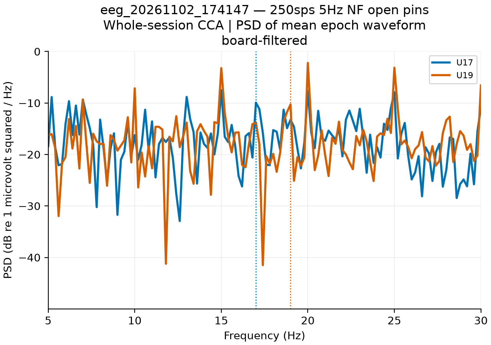 board-filtered; channels: C9, C10, C11, C12, C13, C14, C15, C16. Independent target weights fitted once using the whole session. NaN-aware mean epoch waveform, then PSD. No event alignment. 106 complete + 1 partial 5-s epochs; 133341 samples, all retained. DPSS NW=1/K=1; 0.2 Hz FFT grid. 17/19 Hz are inherited targets, not verified stimuli. SVG | 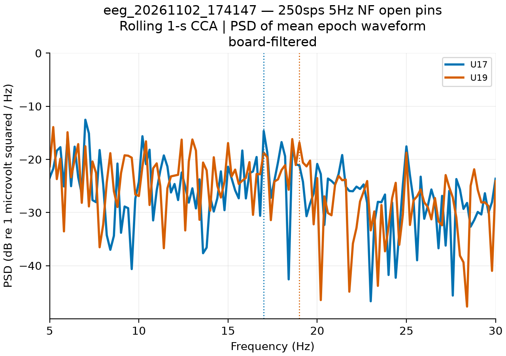 board-filtered; channels: C9, C10, C11, C12, C13, C14, C15, C16. Latest 1-s windows; logged CCA endpoints + offline boundary endpoints. First window back-projected; offline analysis. NaN-aware mean epoch waveform, then PSD. No event alignment. 106 complete + 1 partial 5-s epochs; 133341 samples, all retained. DPSS NW=1/K=1; 0.2 Hz FFT grid. 17/19 Hz are inherited targets, not verified stimuli. SVG |